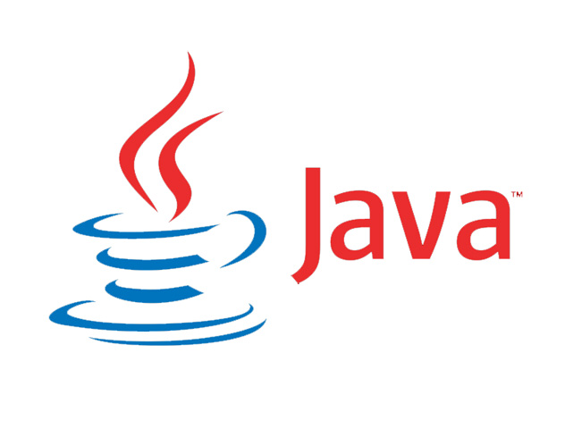
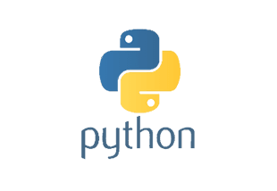
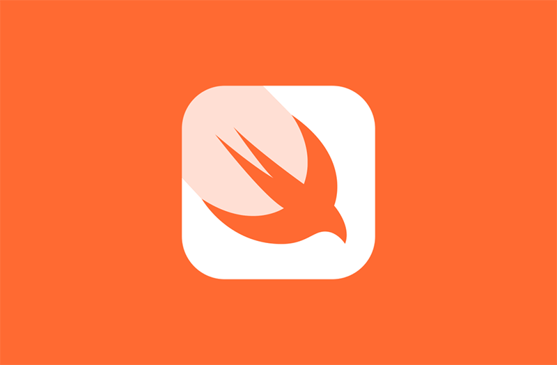

JavaScript, bir
istemci tarayıcısında çalışan ve sunucu yerine bir bilgisayarda
komutları işleyen istemcci taraflı bir programlama dilidir.
Genellikle bir HTML veya ASP dosyasına yerleştirilir. Adına rağmen,
JavaScript Java ile ilgili değildir.
Java
 Java, web
tabanlı geliştirmeyi mümkün kılan çeşitli özelliklere sahip genel
amaçlı, nesne yönelimli, ve yüksek seviyeli bir programlama dilidir.
Python
 Python,
gelişmiş bir programlama dilidir. Nesne odaklı, esneklik ve
sağlamlık üzerine kurulmuş ve yorumlanmıştır.
Rust
Rust; açık
kaynak kodlu, çoklu paradigmalı, ilk olarak Mozilla tarafından
dizayn edilen ve Rust Foundation tarafından geliştirilmekte olan;
performansa, güvenliğe ve eş zamanlı işlem yapabilmeye odaklanmış
bir sistem programlama dilidir. Rust, söz dizimi olarak C++ diline
benzemektedir.
Swift
 Swift,
Apple’ın iOS ve OS X uygulamaları için en yeni açık kaynaklı, çok
paradigmalı programlama dilidir. Swift, Objective-C'nin
adlandırılmış parametrelerini ve nesne odaklı modeli entegre eder.
Aynı zamanda gelişmiş bir derleyici, hata ayıklayıcı ve iskelet
altyapısı sağlar.